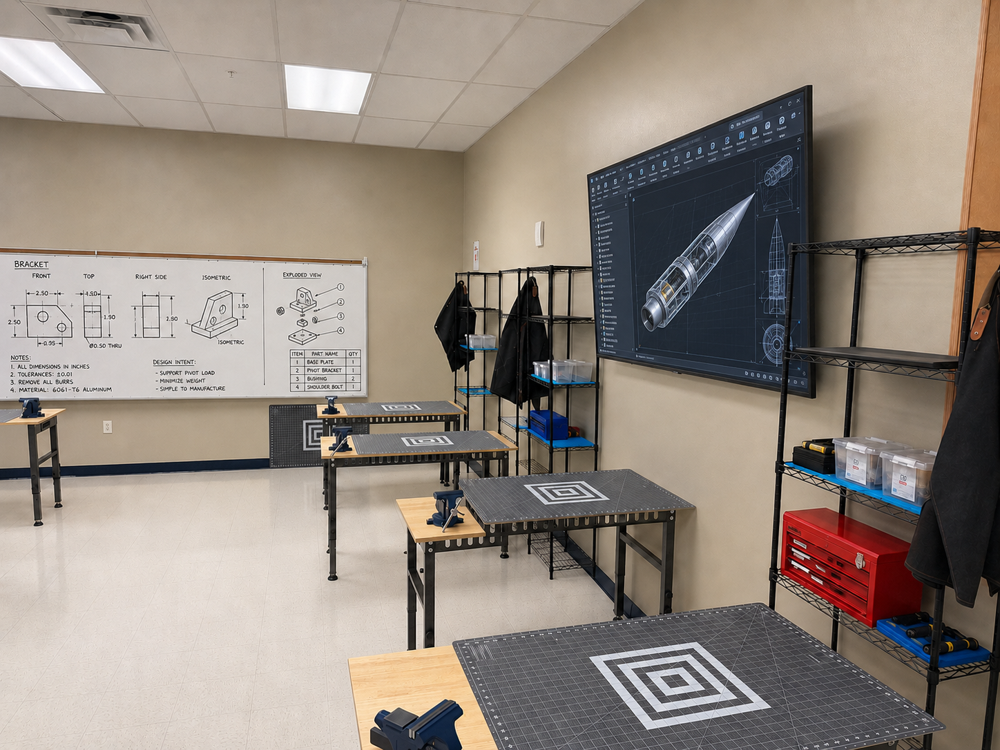
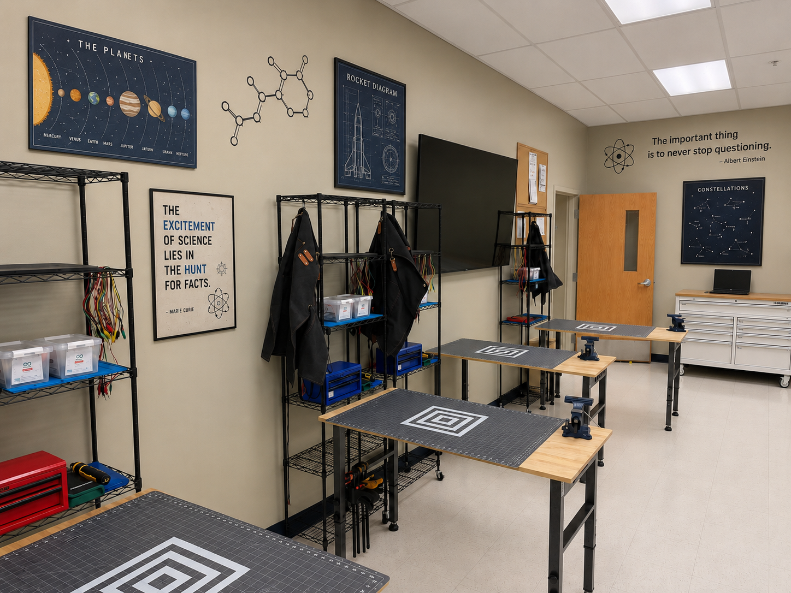

Create ideas and plans
Develop sketches, CAD models, engineering drawings, and project plans before building.
The CCA FabLab is a student engineering workspace where sketches, CAD models, and ideas become physical prototypes. You will learn to work like an engineer by following safe procedures, earning certifications, building with purpose, and documenting every major decision.

The FabLab supports the full engineering workflow from first idea to final prototype and reflection.
Develop sketches, CAD models, engineering drawings, and project plans before building.
Use certified tools to 3D print, laser cut, machine, assemble, and refine project components.
Measure parts, check fit, collect data, troubleshoot problems, and use evidence to make revisions.
Maintain notebooks, BOMs, design reviews, code notes, and final presentations that show your work clearly.
Follow the shared process so the FabLab stays safe, organized, and ready for real engineering work.
Review safety rules, tool limits, classroom procedures, and documentation expectations before starting.
Complete the required certifications before using restricted tools or equipment.
Prepare your files, materials, dimensions, tool settings, and notebook evidence before fabrication begins.
Fabricate carefully, inspect results, revise as needed, and leave the lab ready for the next class.
The FabLab supports multiple types of engineering and manufacturing work.
Create prototypes, brackets, fixtures, models, and test parts.
Cut flat parts, panels, templates, and project components quickly and accurately.
Learn toolpaths, setup, workholding, and safe machining habits.
Build and repair circuits, sensors, and electrical systems for engineering projects.
Cut, fasten, align, clamp, finish, and assemble prototype components.
Measure parts, record findings, and communicate design decisions professionally.
Start with safety, build foundation skills, and then unlock more advanced fabrication pathways.
Begin here before using FabLab equipment.
Engineering SafetyBuild the core habits that support design, communication, and safe hand-tool work.
After safety and foundational preparation, you can earn access to production tools.
These certifications support more complex fabrication, design review, and professional workflow skills.
Each certification shows that you understand the safety practices, setup steps, and workflow expectations for that tool or topic.
Start here before using any FabLab equipment.
Certification for slicer setup, printer operation, and print evaluation.
Certification for safe file prep, machine use, and material handling.
Certification for CAM, setup, workholding, and safe machining workflows.
Certification for proper setup, bit selection, and drilling safety.
Certification for electrical tool use, solder joints, and workspace safety.
Certification for basic fabrication tools, safe handling, and simple operations.
Certification for interpreting and creating student engineering drawings.
Certification for foundational CAD modeling and design workflow skills.
Aerospace work depends on careful planning, repeatable processes, and evidence-based improvement. The FabLab gives you a place to practice those habits every day.
Measure carefully, work to tolerances, and inspect parts so the final result performs as intended.
Move efficiently from concept to physical model, using each build as a chance to learn and improve.
Understand how parts, materials, tools, software, people, and processes connect in one complete workflow.
Use feedback, failures, measurements, and test data to improve the next version of the design.
Use this section as a quick checklist before, during, and after any FabLab work session.
A look at the learning environment, fabrication workstations, and aerospace-themed engineering space.


